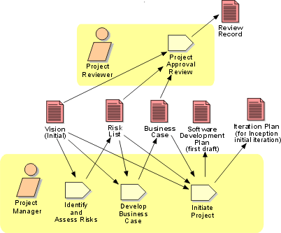

Disciplines >
Disciplines >
 Project Management >
Project Management >
 Workflow >
Conceive New Project
Workflow >
Conceive New Project
Disciplines >
Project Management >
Workflow >
Conceive New Project
Workflow Detail:
|
Topics |
 |
The purpose of this workflow detail is to bring a project from the initial germ of an idea to a point at which a reasoned decision can be made to continue or abandon the project. On the basis of the initial Vision, risks are assessed and an economic analysis, the Business Case, is produced. If the Project Approval Review finds these satisfactory, the project is formally set up (in Activity: Initiate Project), and given limited sanction (and budget) to begin a complete planning effort. Note that, by definition, this initial Vision is created outside the project (perhaps by a separate business modeling or systems engineering activity), not by the subsequent Activity: Develop Vision within the project. This latter activity adds substance to the initial Vision, validates and refines it. The project begins with this workflow detail, so any artifacts that are input must already exist - i.e. the project must have some organizational and business context.
The person(s) acting as Project Manager for these early activities may not be the one(s) to carry the project forward, because the emphasis at this stage is on risk discovery and establishing the potential return-on-investment. The Project Manager's ability to make sound business and technical risk judgments is valuable, the ability to manage teams of people less so, in these early activities. Equally, the Project Reviewer should have extensive business and domain experience.
In the Business Case, the Project
Manager should describe at least two approaches to realizing the Vision,
and analyze these in terms of risk impact, and economic outcomes. During the Project
Approval Review, one of the offered choices will be selected, if the project
is to continue. There is a considerable body of management knowledge and theory
to assist the Project Manager and the Project Reviewer in risk and decision
analysis, and it is valuable to have a few of the project management and review
staff well versed in these techniques - especially if the project is large,
unprecedented, complex or otherwise risky. See, for example, [CLE96],
[EVA98] and [VOS96].
|
Rational Unified
Process
|